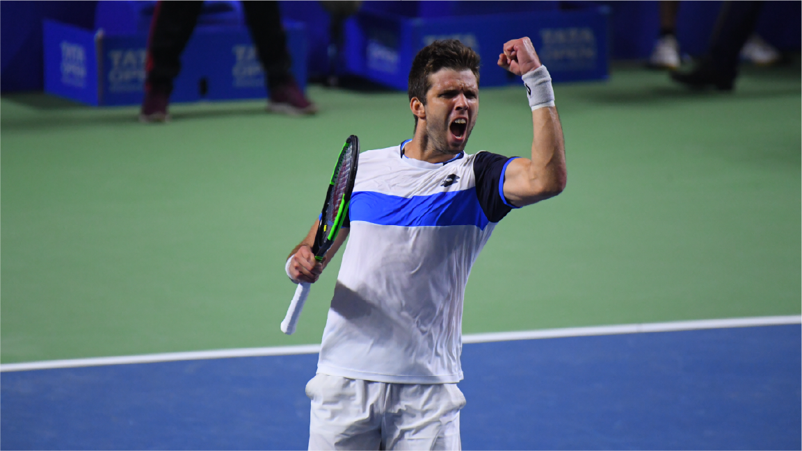
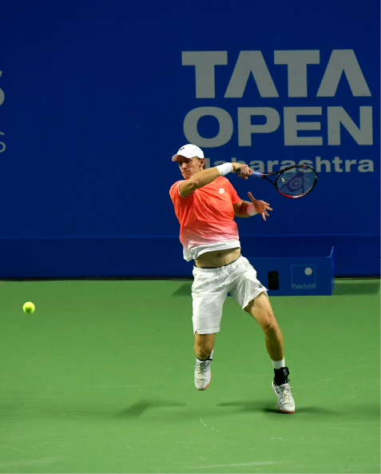

<!doctype html>
<html class="no-js" lang="">

<head>
	<meta charset="utf-8">
	<title>Tata Open - RISE Worldwide</title>
	<meta name="description" content="">
	<meta name="viewport" content="width=device-width, initial-scale=1">

	<meta property="og:title" content="">
	<meta property="og:type" content="">
	<meta property="og:url" content="">
	<meta property="og:image" content="">

	<link rel="stylesheet" href="css/main.css">

	<link rel="apple-touch-icon" sizes="180x180" href="apple-touch-icon.png">
	<link rel="icon" type="image/png" sizes="32x32" href="favicon-32x32.png">
	<link rel="icon" type="image/png" sizes="16x16" href="favicon-16x16.png">
	<link rel="manifest" href="site.webmanifest">
	<link rel="mask-icon" href="safari-pinned-tab.svg" color="#23297a">
	<meta name="msapplication-TileColor" content="#23297a">
	<meta name="theme-color" content="#23297a">
</head>

<body class="page toPage">

	<!--  -->
	<header id="header"></header>

	<main>

		<!--  -->
		<section class="block to1">
			<div class="container">

                <div class="title">
                    <h2 class="">TATA OPEN<span>MAHARASHTRA</span></h2>
                </div>

                <i class="imgTo"></i>

                <div class="toText">
                    <p>Tata Open Maharashtra is South Asia’s only ATP Tour event
                    and India’s most celebrated tennis event which acquired heritage status as the Chennai Open.
                    It has now moved to Pune and 3 editions of Tata Open Maharashtra have been held successfully.</p>
                    
                    <p>The 2020 Tata Open Maharashtra was the landmark 25th edition of the tournament in India.The singles title was won by
                    Jiri Vesely and the doubles title by Andre Goransson and Christopher Rungkat.</p>
                </div>

                <i class="imgBt">
                    
                </i>
            
            </div>
        </section>


        <!--  -->
        <section class="block bgImg" style="background-image: url('img/pages/to/t2.png');">
            
        </section>


        <!--  -->
        <section class="block co">
            <div class="container">

                <div class="title">
                    <h2 class="">CHENNAI OPEN</h2>
                </div>

                <div class="coText">
                    <p>The Chennai Open began in the year 1996 and is South Asia’s oldest
                        and one of the most prestigious ATP events, attracting the highest ranked tennis professionals
                        from around the globe as well as promising Indian talent.
                        The event took place in January every year and was one of the first tournaments
                        in the tennis calendar.</p>
                    
                    <p>The Chennai Open became an important fixture on India’s international sporting calendar,
                        drawing top players from across the world for 21 long years.
                        Most of them, including Rafael Nadal who has often spoken about its importance in his journey to World No. 1,
                        had made it their first stop every year.</p>
                    
                    <p>India’s Leander Paes and Mahesh Bhupathi forged their formidable partnership at the Chennai Open
                        winning 5 titles together and went on to become one of the greatest men’s doubles partnerships in modern history.
                        The tournament has seen legendary names such as Boris Becker, Patrick Rafter, Yevgeny Kafelnikov,
                        Carlos Moya, Marin Cilic and Stan Wawrinka to name a few.
                        Success at the Chennai Open has been a pivotal stepping stone for some of these players
                        in their rise to the ATP’s elite Top 5 list.</p>
                </div>
                
                <i class="imgBottomF"></i>

            </div>
        </section>

        <!--  -->
        <section class="block fullVideo">
        
            <video class="" loop muted playsinline  poster="img/pages/to/t1.png" id="bgvid">
                <!-- <source src="polina.webm" type="video/webm"> -->
                <source src="img/home-video.mp4" type="video/mp4">
            </video>
            
        </section>

        <!--  -->
        <section class="block footerLayer" >
            <div class="container">

                <div class="row">
                    <div class="col-md-7">
                        <div class="fLeft">
                            <p>Across the 22 years
                                of the tournament in Delhi and Chennai,
                                the tournament has associated
                                with partners such as the McDowell Group
                                (McDowell Open - 1996),
                                the ITC Group
                                (Gold Flake Open – 1997-2001),
                                the Tata Group
                                (Tata Open – 2002-2004),
                                the Government of Tamil Nadu
                                (Chennai Open – 2005 - 2009)
                                and Aircel
                                (Aircel Chennai Open – 2010-2017).</p>
                            
                            <i class="imgW"></i>
                            
                            <p class="mt-3">Visit <a href="http://www.maharashtraopen.com/" target="_blank" class="">www.maharashtraopen.com</a></p>
                            
                            <a href="http://www.maharashtraopen.com/" target="_blank" class="btn btn-outline-primary">CLICK FOR MORE</a>
                            
                            <i class="imgBottomF"></i>
                        </div>
                    </div>

                    <div class="col-md-5">
                        <div class="fRight"></div>
                    </div>
                </div>
        
                

            </div>
        </section>

	</main>

	<script src="js/vendor/jquery-3.4.1.min.js"></script>
	<script src="js/plugins.js"></script>
	<script src="js/main.js"></script>
</body>

</html>